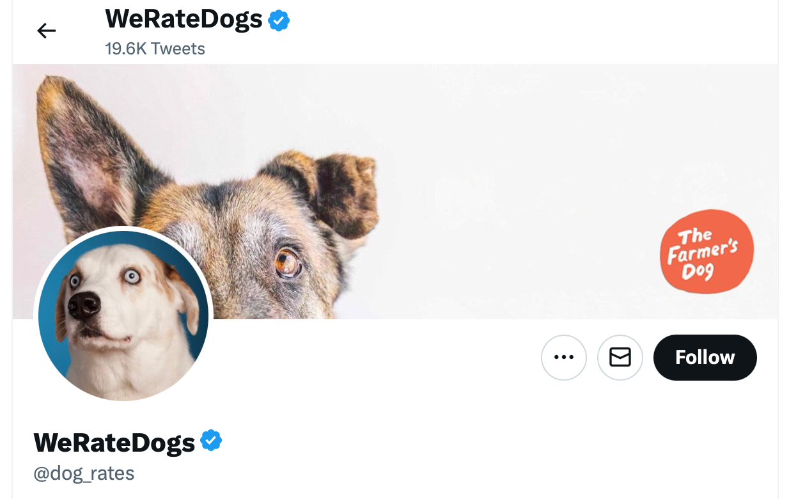
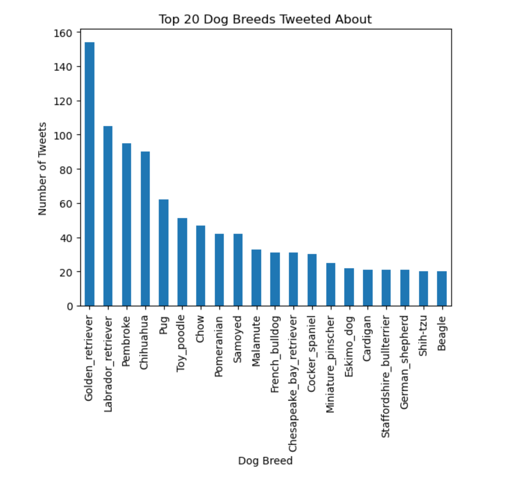
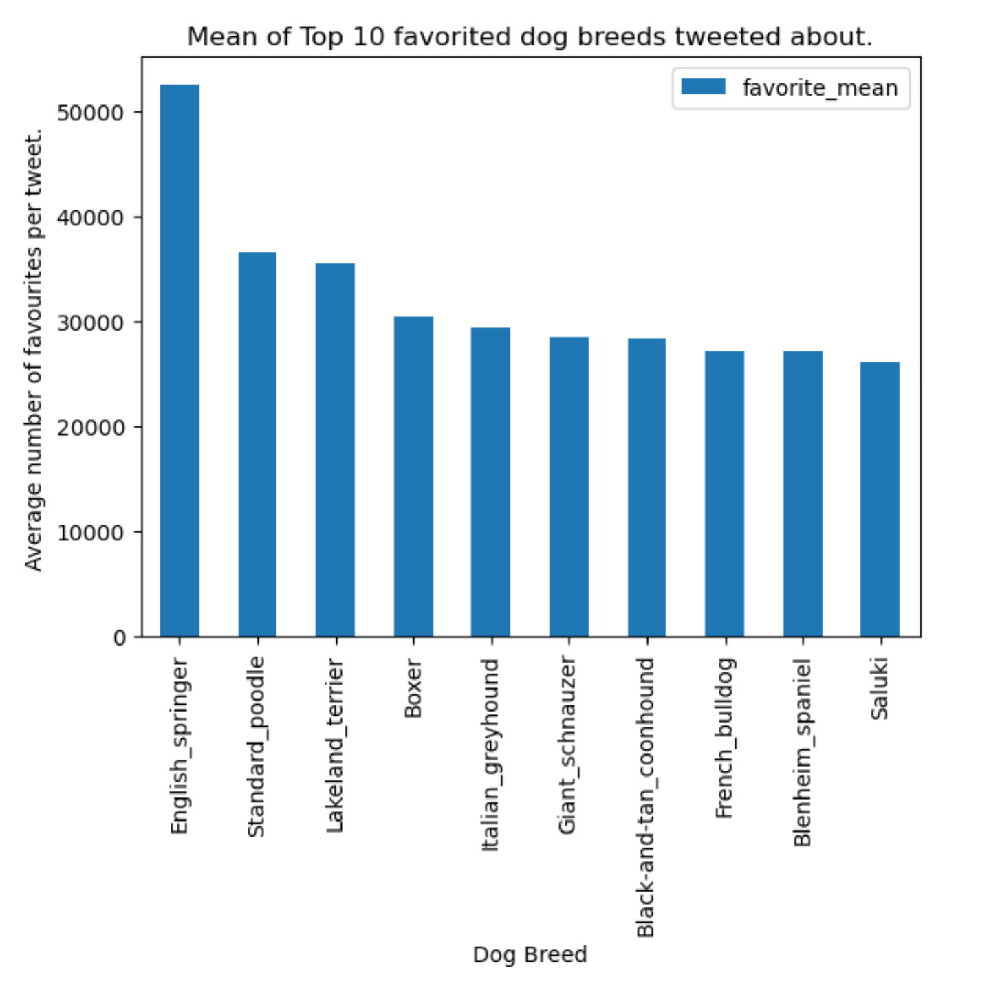

Data Wrangling
The hidden popularity of We Rate Dog's favourite dog breeds.
In this project data is gathered from multiple sources, including a web scrape of a twitter account using Twitter's API. The primary goal of this project was to assess and then clean the data. Regex was utilised for incoporating real tweets in our analysis.
Project Sections
Findings Report
WeRateDogs is a Twitter account that rates people's
dogs in a
humorous comment about the dog. The
denominator of these ratings is almost always 10. Emphasising the cuteness of dogs, the
numerator,
almost always exceeds 10. As part of the fun, dogs are also categorized into a dog
"stage" (i.e.
doggo, floofer, pupper, and puppo). According to the Dogtionary via the #WeRateDogs book
on Amazon;
a doggo is a big pupper / older dog, a small doggo is usually younger than a doggo, but
can be more
mature. A puppo is in a transitional phase between a pupper and a doggo and a floof can
be any
excessively fluffy and furry dog!
The tweet data from the WeRateDog’s twitter account was analysed to investigate which
tweets
containing specific dog breeds perform best. The finding, interestingly, revealed that
the most
favorited tweets did not contain the same dog breeds as the dog breeds tweeted about
most
frequently.
The bar graph below illustrates that the dog breed most frequently occurring in tweets
is a golden
retriever, followed by Labrador retrievers, pembrokes and then chihuahua’s.

Overtime, tweets concerning these dogs have decreased, but spikes have recurred. Only tweets containing golden retrievers spiked again at the beginning of 2017. Tweets containing labrador retrievers spiked again in August 2016. Tweets containing pembrokes were high at the beginning of the data period and gradually dropped until June 2016, after which it remained relatively low.

It is interesting to see however, that tweets with the highest average favourite count do not concern the breeds most often tweeted about. The English Springer breed has received the highest favourite count on average per tweet and it’s average favourite count is significantly higher than other breeds. Could these dogs be the more popular breeds to tweet about?
Other potential factors contributing toward the popularity of a tweet would be valuable for this analysis. Perhaps tweets promoting animal needs, rights, charities or significant events would increase engagement of tweets and cause tweets to go more viral. It is also necessary to consider the amount of tweets per dog breed in the above aggregation calculation. It is possible that a few viral tweets may have skewed these numbers.
Wrangling Report
Brief:
The dataset wrangled (and analyzed and visualized) in this data wrangling project from Udacity is the tweet archive of Twitter user @dog_rates, also known as WeRateDogs. WeRateDogs is a Twitter account that rates people's dogs with a humorous comment about the dog.
Objective:
Gathering the data:
This data analysis consists of three datasets gathered from three different sources.
- The WeRateDogs Twitter archive - this is a .csv file provided by Udacity. This archive contains basic tweet data (tweet ID, timestamp, text, etc.) for all 5000+ of WeRateDogs tweets as they stood on August 1, 2017
- The tweet image predictions - this is a .tsv file also provided by Udacity. Images of the tweets were run through a neural network to classify breeds of dogs present in tweets.
- Additional data from the Twitter API was gathered to produce the retweet count and favorite count of the tweets. Only the last 3000 tweets are available for download using the Twitter API and thus we have this data missing from the earlier tweets in the WeRateDogs Twitter archive.
Assessing the Data:
For the assessment of the data I visually assessed the three datasets using excel and viewing the
dataframe in the Jupyter Notebook.
Some key findings:
The programmatic assessment included a standard set of steps using df.shape(), df.head(),
df.info().
Some key findings:
Quality issues
Before addressing quality issues, copies of each dataframe was made and the dataframes were merged.
| Observation | Solution |
|---|---|
| Dataset contains retweets and replies. | We can remove rows by using Pandas .isna() method on `retweeted_status_id`, `in_reply_to_user_id` and `in_reply_to_status_id` columns and only keeping rows that have a NaN value in this column. |
| tweet_id is an int not a string. | Column datatype was changed using the .astype(str) method. |
| timestamp is a string not a timedelta. | Column datatype was changed to a datetime64 object using pd.to_datetime. This allows for extraction of date parts. |
| Incorrect rating for some tweets. | Less than 1 % of the data is not equal to a denominator of 10. All these entries were removed, so that a consistent rating system can be observed, since some of the larger ratings were assigned to a group of dogs. Some of the numerator ratings were also extracted incorrectly and need to be identified using regex on the text column. Datatype of ratings needs to be float. |
| Some names extracted incorrectly. | Some of the tweets don't have dog names in them, but other words have been falsely identified as names, such as, 'a', 'an', 'the'. These words were identified in the name column by searching for names starting with a lowercase letter. Regular expressions were used to identify these and the .replace() function to replace them with NaN values. |
| 'None' values should be converted to NaN. | Using the .replace('None',np.nan) function across the dataframe, all missing values were correctly assigned as NaN values. |
| Some urls are duplicated in the expanded_urls column and aren’t separate items in a list, making it difficult to access them. | The urls were split using a deliminator ',' so that they are separate items in a list. The list was then converted to a set, automatically dropping any duplicate urls. |
| Columns contain dog breeds as well as other objects.td> | A function was written and applied to the dataframe to identify rows containing dog breeds and replacing all irrelevant objects with NaN. |
| source column can be simplified.td> | Since there are only four common values in the `source` column, these values were replaced to be more readable and change the column datatype from a string (pandas object) to a category. This is done using .replace and .astype('category') |
Tidiness issues
| Observation | Solution |
|---|---|
| Datasets have duplicate columns and relevant data is not merged. | Join dataframes using a left join. This step took place before addressing quality issues so that quality issues pertaining to more than one dataset could be addressed simultaneously. |
| The doggo, pupper, floofer and puppo columns should be merged into one column. | The columns identifying dog stages can be merged into a single column. If some rows contain more than one dog stage, the stages can be separated by a ',' delimiter. |
| Unnecessary columns. | Remove and reorder columns not needed for analysis. I.e. most columns originally from the image_predictions dataframe were dropped as one column with dog_breeds was extracted from the data. |
| timestamp column not split into simpler counter parts. | Using pd.DatetimeIndex the month, day and year can be extracted and assigned as their own columns. This provides efficient access for future time series analysis. |
- © ccfinlay
- Design: HTML5 UP